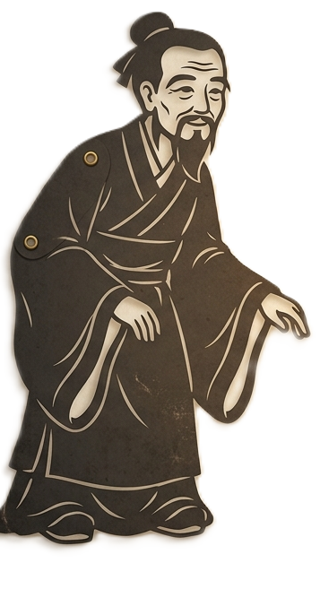
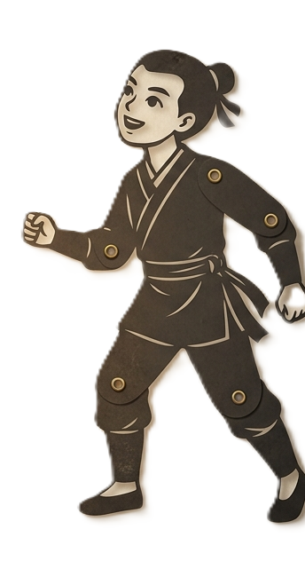

FIFTY YEARS | DHARMA MAP
天法五十 · 氣脈相連
左右滑動地圖，點擊閃爍金點探索全台聖堂
[ 點擊任意處開始探索 ]
FIFTY YEARS | DHARMA MAP
左右滑動地圖，點擊閃爍金點探索全台聖堂
[ 點擊任意處開始探索 ]
The Golden Jubilee Chronicles

寶光永耀


FIFTY YEARS | SHRINE
這裡會顯示聖堂的詳細介紹資訊。
-202600316-1.jpg)